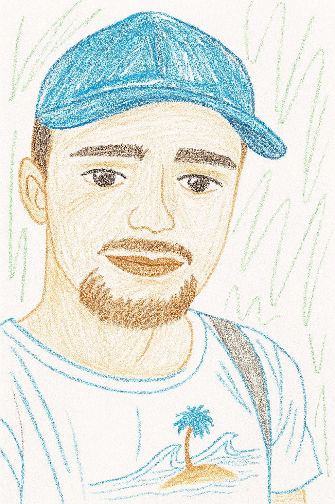

Patryczek pinki łinki
Technik główny

Bartek WidziałWszystko (SawAll) MłodyKot
Grafik komputerowy

Chińczyk Oliveira
Pomysłodawca, nadzorca, HR team leader
Technik główny
Grafik komputerowy
Pomysłodawca, nadzorca, HR team leader
Platforma "Talonowo" udostępnia symulację waluty wirtualnej wyłącznie w celach edukacyjnych i rozrywkowych. Aktywa dostępne w serwisie nie stanowią prawnego środka płatniczego, nie są instrumentami finansowymi i nie mają zagwarantowanej wymienialności na walutę fiat. serwis nie świadczy usług finansowych ani inwestycyjnych. © 2025 ScorchinRebar and koledzy | Wszelkie prawa zastrzeżone.